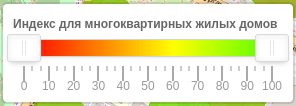

Это не коммерческий проект и платить за большое количество ресурсов нет возможности, но после "релизов" резко возрастает нагрузка, что может вызывать задержку в ответах сервера. ЗАДЕРЖКА ДО 1-2 МИНУТ ЭТО НОРМАЛЬНО. Если дольше или белый экран - просто попробуйте зайти позже с обновлением экрана.
Города разбиты гексагоны на основе Uber H3 Геоиндекса. Доступность объектов рассчитывается на основе расстояния до центра гексагона. Индексы нормализованы по городу или выбранной области - показатель индекса это не количество объектов, а сравнительная характеристика с самым лучшим (100) и самым худшим (0) индексом.
Можно выбирать индекс для отображения - это либо области с многоэтажной жилой застройкой либо город целиком.
Опции "Для многоквартирных домов" и "Для многоквартирных домов (изохроны)" отличаются тем, как ищется удаление
объектов. В первом случае расстояние считается по гексагонам (путь по соседним H3 индексам). Во втором случае
строятся изохроны (используя Valhalla) на 5, 10, 15, 30 минут пешком и 10 минут автомобилем. Опция "Для
всего города" строится по гексагонам.
Для жилой застройки доступен выбор типа застройки (поле выбора скрывается для индекса по всему городу):
Общий индекс рассчитывается как сумма отдельных индексов с весами и последующей нормализацией. Веса можно выбрать от -5 до 5. При указании 0 - индекс не будет использоваться в рассчетах.
Доступные индексы:
Доступен выбор из готовых комбинаций параметров - можно быбрать из выпадающего списка. Конфигурация параметров
показывает области, которые удовлетворяют критериями, зеленым цветом (красным - не удовлетворяют).
| Получить выделение зеленым областей с минимальной плотностью застройки - соответсвенно красным будут выделены области с высокой плотностью | |
| Получить выделение зеленым областей с максимальной плотностью застройки - соответсвенно красным будут выделены области с низкой плотностью | |
| Получить выделение зеленым областей с минимальной плотностью застройки и школами доступными в радиусе до 1 км (чем больше школ и они ближе, тем выше индекс - ближе к зеленому цвету) | |
| Получить выделение зеленым областей с минимальной плотностью застройки, доступностью школ и садов. При этом наличие садов важнее, чем школ | |
| Получить выделение зеленым областей с минимальной плотностью застройки и доступностью транспорта, при этом должно быть меньше садов и школ в радиусе доступности (1 км) |
Индексы рассчитаны на основе информации из OpenStreetMap. Если видите неточности - правки можно вносить в OSM напрямую и в следующую загрузку они попадут в индексы.
На данный момент загружены данные только для областных цетров. Выбрать отображаемый и используемый для нормализации город можно в параметрах:

Внизу слева расположена легенда

совмещенная с выборото диапазона отображения общего индекса. Изменять можно нижнюю и верхнюю границы с шагом 5.
Соответсвенно на карте будут отображены области только со значениями общего индекса внутри выбранно диапазона
(включая граничные значения).
По клику на гексагон будет открыто окно с детальными индсами:
Элементы управления картой расположены в правой части экрана:
Со всеми вопросами можно обращаться lotusnotes@yandex.by